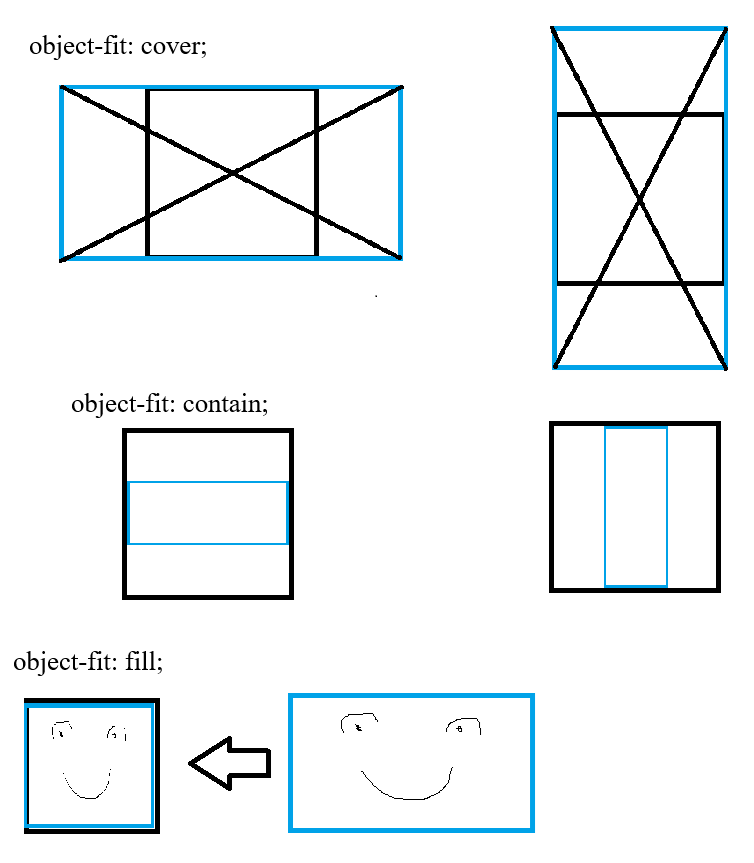

Les images
Les images peuvent être affichées à l'aide de deux balises : img et picture
img
img est une balise qui une fois écrite, va aller chercher l'image source et l'afficher à sa place. Si rien d'autre n'est précisé, l'image s'affiche à sa taille originale. Si on change, par exemple, sa largeur, la hauteur garde le ratio (l'homothétie, le rapport hauteur / largeur)
Une image peut-être appelée dans un paragraphe :  , elle est intégrée dans le flux du texte.
, elle est intégrée dans le flux du texte.
Il est possible d'imposer une largeur et une hauteur à une image, mais il faudra utiliser une classe css dans laquelle on précise que l'objet (ici le flux de l'image) "couvre" l'espace proposé.

Figure
Il existe une balise conteneur pour les media, qui aide la sémantique web pour le référencement et l'accessibilité. la balise figure va encadrer un media, et donne la possibilité d'y ajouter une légende, avec la balise figcaption.
La légende sera rattachée sémantiquement à l'image et son texte alternatif, ce qui améliorera le référencement.
Picture
La balise picture permet de faire de l'affichage d'image adaptatif : selon la taille disponible autour de l'image affichée, on peut sélectionner la même image dans des formats différents.